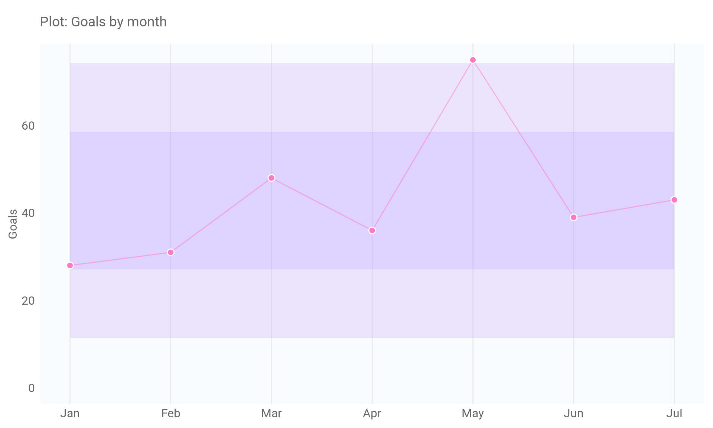

Мы вас не слышим, или почему продавать слуховые аппараты через сайт — так себе идея
Кейс в нише медицинских товаров
Медицинские товары
Проект «МастерСлух»
Заказчик — сеть медицинских центров «МастерСлух»™, занимающаяся диагностикой слуха и продажей слуховых аппаратов и аксессуаров к ним. Насчитывает 3 центра в Краснодаре и несколько центров по Краснодарскому краю.
Задача
Разработать стратегию привлечения заявок на покупку медицинских товаров из платных источников на основе вводных данных от клиента и ситуационного анализа.
Решение
Запуск рекламных кампаний в Директ и привлечение пациентов на услуги с дальнейшей продажей слуховых аппаратов клиенту по назначению врача.
Результат
400+ — обращений с сайта за весь период;
600₽ - 1 900₽ — диапазон контольных границ по стоимости обращения (CPA) в пределаг одной сигмы;
контрольные границы по обращениям в пределах ± 1 сигмы: 6 - 14 заявок в неделю;
≈ 10% — конверсия сайта из пришедших на сайт по рекламной кампании на поиске;
≈ 0,7% — конверсия сайта из пришедших на сайт по рекламной кампании в РСЯ.
ИТ : Сайт на Битрикс, колл-трекинг, GTM, Я.Метрика, API Директ, язык программирования R и Google таблицы для автоотчетов, контрольные карты Шухарта
Срок : 14 месяцев
О проекте
Разберем кейс в нише слуховых аппаратов. Далее расскажем почему продавать аппараты напрямую пациентам было не очень хорошей идеей, и к каким выводам мы пришли после сопровождения рекламных кампаний в Директе в течении года.
Ситуация
Клиент поставил следующие задачи:
- привлечь новых клиентов;
- получить больше заявок;
- увеличить продажи слуховых аппаратов.
На старте у компании уже был готов сайт с товарами и услугами, но слуховые аппараты не продавались напрямую — клиенты могли отправить форму обратной связи для получения консультации по интересующему артиклу.
На сайте был установлен счётчик Метрики, но цели не были настроены. Также не была установлена связь между Метрикой и CRM-системой. Бюджет компании был жёстко ограничен.
Цель
Разработать стратегию привлечения пациентов с платных источников, исходя из вводных данных от клиента и ситуационного анализа. Рассчитать прогнозные KPI и использовать их в качестве реперных точек до момента накопления статистически значимых данных проекта.
Действия
Провели ситуационный анализ и на основе данных сформулировали гипотезы по будущей стратегии и тактике привлечения клиентов. Также установили прогнозные KPI с помощью дискретного распределения Пуассона в качестве реперных точек. Было определено, что из Яндекс Директ при текущих бюджетах с вероятностью 90% возможно привлечь от 8 до 22 (в среднем 15) первичных обращений в месяц и примерно такое же кол-во обращений из Google Ads.

Александр Коршаков,
Руководитель проекта
В работе я использую фреймворк SOSTAC для планирования и проведения маркетинговых кампаний. Сначала проводим ситуационный анализ, чтобы понять текущую ситуацию и определить возможности для улучшения. Затем определяем ключевые показатели эффективности (KPI), разрабатываем стратегию и тактику, а также контролируем реализацию стратегии.
Затем создали рекламные кампании в соответствии с нашей стратегией, настроили аналитику и запустили кампании. Однако мы отказались от рекламы в Google Ads, так как не хватало бюджетов на обе системы.
Рекламные кампании состояли из торговых рекламных кампаний, где использовались фиды данных и ключевые слова, относящиеся к вендорам и маркам слуховых аппаратов, в качестве таргетинга. Также была настроена брендовая рекламная кампания.
После первого месяца работы мы получили 15 первичных обращений через звонки, формы и чаты. Это соответствовало нашим прогнозам. Однако основным источником лидов была брендовая рекламная кампания.
Нас это не устраивало, и мы отказались от брендовой РК. Далее до конца года мы искали различные комбинации таргетов и рекламных кампаний, однако кампании сначала давали результат, но потом быстро «затухали».
В сентябре 2023 была утверждена новая группа гипотез, предполагающая фокусирование на привлечение пациентов на те услуги, которые в дальнейшем приведут к продаже слуховых аппаратов. Были созданы и подключены соответствующие РК, а РК на основе фидов были остановлены.
Сначала компания не справлялась с поставленными задачами и не достигала целей. Однако в последующие месяцы принятые меры по её оптимизации начали приносить результаты.
В целом рабочие границы по достижению целей в 2023 году составляли от 14 до 25 обращений в месяц.
Результат
Перебрав множество различных комбинаций, на данный момент в проекте работает две рекламные кампании в «Директ». Одна на поиске и одна в РСЯ. При этом мы продолжаем обучать рекламную систему на микроконверсиях, что даёт стабильность и хорошие результаты.

В итоге компания получает от 6 до 14 целевых обращений с сайта в неделю. При этом система привлечение лидов находится в управляемом состоянии и работает стабильно.
Александр Коршаков,
Руководитель проекта
Лучшим решением в данном проекте было таргетироваться на людей, заинтересованных в услугах, а не в покупке слуховых аппаратов. Использование слуховых аппаратов предполагает, что пациент сначала посетит врача, который проведет нужные тесты и подберет лучший вариант устройства. Никто не будет покупать слуховой аппарат без консультации с врачом.
Второе хорошее решение — это обучить рекламную систему на микроконверсиях. Причиной стало то, что Директу не хватало сигналов для обучения стратегии на стандартных целях. Это приводило к неконтролируемым, и соответственно не управляемым результатам. Сейчас показатели стабильны и дают возможность оптимизировать кампанию, используя контрольные карты Шухарта.
Далее я планирую продолжать работу по увеличению кол-ва обращений в рамках бюджета и сокращению стоимости обращения.